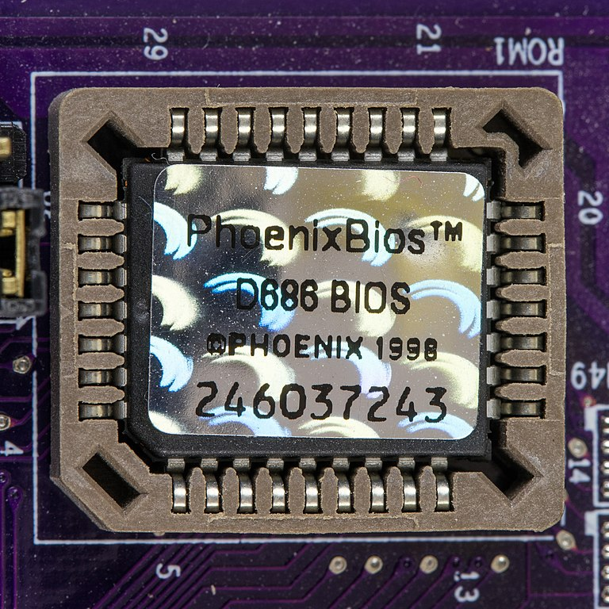
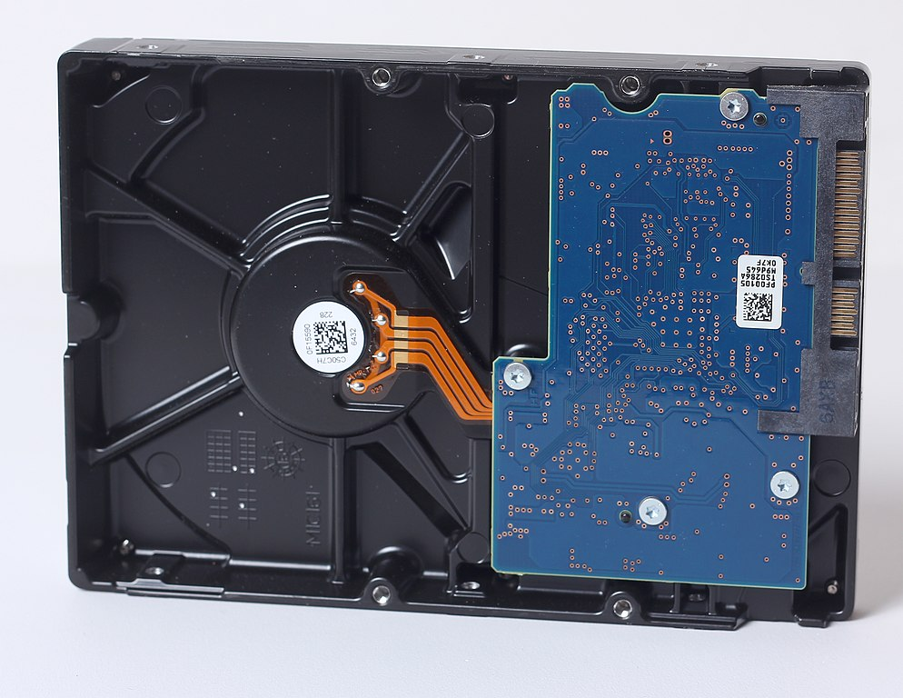
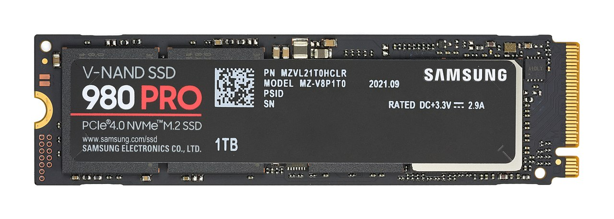
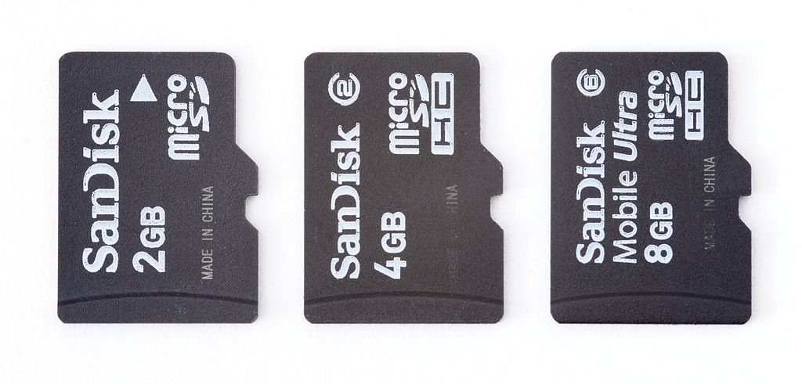
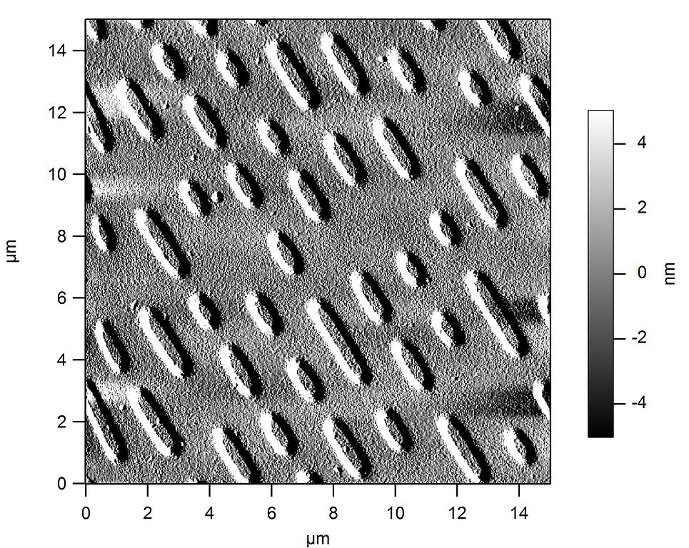
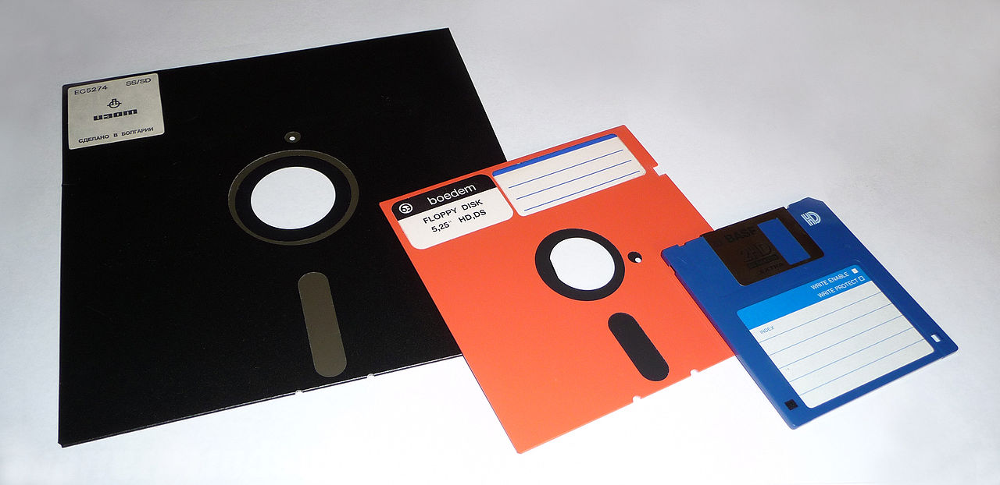
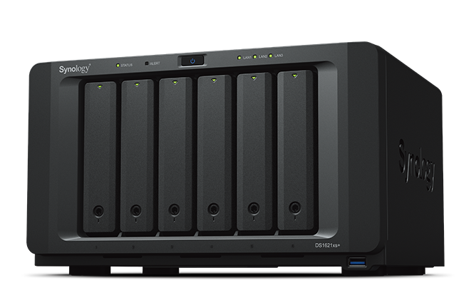

Emmagatzematge d'informació¶
Els ordinadors són dispositius que tracten i transformen la informació, de manera que els dispositius que emmagatzemen aquesta informació són fonamentals per determinar la capacitat i la velocitat de l’ordinador.
Índex de contingut:
Classificació dels dispositius d'emmagatzematge¶
** Segons la seva posició i enllaç a l'ordinador local: **
Emmagatzematge primari
- Carner
- Memòria de la memòria cau
- Buffer de dades
Emmagatzematge secundari
- Memòria de Rom
- Disc d’estat sòlid SSD
- Disc dur magnètic HDD
Emmagatzematge extern
- Unitats de CD-ROM, DVD, Blu-ray
- Memòria USB
- Targetes SD
- Cinta magnètica
- Discos flexibles
Emmagatzematge virtual
- Equips de la NAS
- Emmagatzematge de núvol
** Segons el vostre mètode d'emmagatzematge: **
Dispositius d’estat sòlid
- Carner
- Memòria de Rom
- Unitat d’estat sòlid SSD
- Memòries USB
- Targetes SD
Dispositius d’emmagatzematge magnètic
- HDD Hard Drives
- Cinta magnètica
- Discos flexibles
Dispositius d’emmagatzematge òptic
- Discos CD-ROM
- Discos de DVD
- Discos Blu-ray
Emmagatzematge primari¶
Les memòries d’emmagatzematge primàries són els dispositius que contenen la informació amb què funciona el processador. Són els records més ràpids i ràpids a prop de la unitat de procés central.
- Carner
El `Ram
La memòria RAM ha de ser molt ràpida per no alentir la velocitat de la unitat de procés central (CPU). Una memòria RAM actual pot transferir més de 20 gigabytes per segon.
També ha de ser suficient per contenir tots els programes, aplicacions i dades que s’estan executant simultàniament a l’ordinador. El 2022, un telèfon intel·ligent mitjà sol tenir gigabytes de 4 a 8 ram i un ordinador personal, de 8 a 16 gigabytes de ram.
El desavantatge de la memòria RAM és que perd les seves dades quan el feed de l'ordinador està desactivat. També és molt més car que els records d’emmagatzematge secundari, 5 €/gigabyte d’una memòria RAM en comparació amb 0,02 €/gigabyte d’un disc dur el 2022.
- Memòria de la memòria cau
El Cache <https://es.wikipedia.org/wiki/cach%C3%A9_ (Informe%C3%A1tica)> __ és un tipus de memòria ràpida que emmagatzema temporalment el contingut llegit de la memòria Ram de manera que les sol·licituds de lectura posteriors es poden tractar més ràpidament.
Funciona similar a la RAM, però és més petit i ràpid. Va sorgir quan la memòria RAM ja no era capaç de treballar a la mateixa velocitat del processador i serveix per al processador per reduir el temps d’accés a les dades i programes situats a la memòria RAM que s’utilitzen amb més freqüència.
Avui la memòria cau de la memòria RAM s’integra generalment al propi processador i sol tenir una mida de diversos megabytes.
{kind=link}
Emmagatzematge secundari¶
Els dispositius d’emmagatzematge secundaris d’un ordinador són records no volàtils, és a dir, emmagatzemen dades tot i que l’ordinador no té menjar. Normalment s’instal·len permanentment a l’ordinador per emmagatzemar el sistema operatiu i els diferents programes i dades per a ús habitual.
Els dispositius d’emmagatzematge secundaris són més lents que l’emmagatzematge primari. Com a contrapart, tenen una capacitat d’emmagatzematge més gran.
- Memòria de Rom
La "memòria ROM <https://es.wikipedia.org/wiki/imagen_rom>`__ (només llegiu la memòria) o la memòria només és una memòria d'emmagatzematge permanent de programes i dades informàtiques. En aquesta memòria, el So -Called Firmware, llegint programes únics que gestionen un dispositiu.
Molts records de ROM que s’utilitzen avui en dia no estan llegint realment. Normalment es basen en la tecnologia flash i es poden reescriure diverses vegades. Per aquest motiu, avui aquesta memòria també s’anomena memòria flash.
Les memòries flash solen ser més lentes, més senzilles i menys capacitat que les memòries incloses en les unitats SSD, tot i que ambdues es basen internament en una tecnologia similar.
Exemples de ROM són la memòria del BIOS (sistema de sortida bàsic) d’un ordinador personal o del programa intern de dispositius com un encaminador, un control remot, etc.

Phoenix BIOS ROM Memòria d’una placa d’ordinador personal.¶
Raimond Spekking, CC BY-SA 4.0, vía Wikimedia Commons.- Unitat de disc dur (HDD)
La unitat de disc dur és un tipus de memòria secundària basada en un disc rotatiu impregnat amb una substància magnètica que permet emmagatzemar informació permanent.
Els discos durs són els responsables d’emmagatzemar programes i dades per mantenir -les mentre l’ordinador estigui desactivat.
Quan un usuari de l’ordinador vol utilitzar un programa o visualitzar un fitxer de dades, la informació es llegeix des del disc dur i s’escriu en RAM perquè la CPU pugui treballar amb ells.
Els discos durs han estat al mercat durant molts anys (des de 1956), de manera que es basen en tecnologies resoltes i molt optimitzades. Malgrat això, es substitueixen gradualment per les SSD pels múltiples avantatges que aquests presenten.

Unitat de disc dur (HDD) amb connexió SATA, vista des de baix.¶
Dmitry Makeev, CC BY-SA 4.0, vía Wikimedia Commons.- Unitat d’estat sòlid (SSD)
La unitat d'estat sòlid és un tipus de memòria secundària basada en xips de tecnologia flash que emmagatzemen definitivament informació.
Són més moderns al mercat (des de 1989) que els discs durs i tenen menys capacitat d’igualtat de preus, però milloren ràpidament al llarg dels anys i substitueixen gradualment els discs durs tradicionals.

Unitat d’emmagatzematge d’estat sòlid (SSD) amb connexió PCI Express.¶
D-Kuru, CC BY-SA 4.0, vía Wikimedia Commons.- Comparació entre HDD i SSD
- Avantatges dels SSD:
- Velocitat de transferència més alta. Més de 600 megabytes/s d'un SSD en comparació amb 100 megabytes/s d'un disc dur.
- Menys temps d’accés. 0,1 mil·lisegons d’un SSD en comparació amb 10 mil·lisegons d’un disc dur.
- Major resistència als cops i vibracions.
- La taxa de fallades de SSD inferior al no tenir parts mòbils.
- Menor consum d’electricitat. 4W o 5W d’un SSD de rendiment màxim en comparació amb 6W a 10W d’un disc dur.
- Mida física inferior.
- El soroll inferior generat.
- Desavantatges dels SSD:
- Menor resistència a un gran nombre d’escrits.
- Gigabyte Preu més elevat. 140 €/TB d’un SSD en comparació amb 24 €/TB d’un disc dur el 2022.
- Intel·ligent
Smart És una tecnologia que implementa discos durs i unitats d'estat sòlid. És un sistema de detecció de fallades precoç que us permet saber amb antelació si un disc dur permet que els signes fallin aviat.
La tecnologia intel·ligent supervisa els paràmetres d’unitats com la seva temperatura, els sectors defectuosos, la quantitat de dades escrites, els errors de lectura, el temps de funcionament, el número d’inici, etc. Tot i que no és capaç de detectar tots els fracassos possibles, permet notificar la majoria de fallades a causa d’una degradació de la unitat.
Hi ha diversos programes que permeten llegir els paràmetres intel·ligents d’una unitat d’emmagatzematge. Alguns programes de control són:
- Crystaldiskinfo <https://crystalmark.info/en/software/crystaldiskinfo/> `` `` `
- Hddscan
- Informació del disc clar
- Assaltar
Una raid (matriu redundant de discos independents) És una tecnologia que permet unir -se a diverses unitats de disc dur (HDD) o unitats d'estat sòlid (SSD) per augmentar el seu rendiment. S'utilitza en servidors de dades i ordinadors d'alt rendiment. Es necessita un controlador especialitzat RAID per connectar els discos a l’ordinador.
En un primer nivell, el sistema operatiu veu una sola unitat on hi ha en realitat diversos discs durs. La velocitat de transferència total augmenta unint les velocitats de transferència de cadascun dels discos.
Als nivells de RAID posteriors, un àlbum s'utilitza per emmagatzemar dades redundants de la paritat. Això permet que les dades no es perdin en el fracàs d’una de les unitats. Quan es detecti una unitat danyada, es pot canviar a una de nova i el sistema recuperarà automàticament les dades perdudes de les dades redundants.
- Buffer de dades
Un buffer de dades és un espai de memòria temporal que emmagatzema dades de lectura o escriptura que es dirigeixen a un perifèric. D’aquesta manera s’accelera l’operació del processador i s’evita que un dispositiu perdi dades durant una transferència irregular de dades.
L’escriptura del buffer per a un dispositiu més lent que el processador, com ara un disc dur o un Pendrive, emmagatzema diversos megabytes de dades que el processador s’envien en ràfegues ràpides per, més tard, escriviu -les al dispositiu d’emmagatzematge a velocitat inferior i contínuament.
Els dispositius d’entrada, com els teclats o els ratolins, també disposen d’un buffer de lectura que emmagatzema les dades que els perifèrics envien fins que el processador els llegeixi ràpidament. D’aquesta manera, el processador principal no ha d’assistir contínuament a un dispositiu lent, però atén a ràfegues ràpides i esperades.
El buffer de dades es troba generalment dins dels perifèrics d’entrada/sortida i dels suports d’emmagatzematge.
{kind=link}
{kind=link}
{kind=link}
Emmagatzematge extern¶
Els dispositius d'emmagatzematge externs es poden desconnectar fàcilment de l'ordinador per ser transportat.
La seva velocitat sol ser més lenta que la dels mètodes d’emmagatzematge intern anteriors, però té l’avantatge de la seva major mobilitat i facilitat de transport.
- Memòria USB
La memòria USB és una memòria externa basada en tecnologia flash amb connexió amb l'ordinador de tipus USB.
La seva capacitat màxima augmenta al llarg dels anys a causa de la llei de Moore. El 2022 podeu comprar una memòria USB de 512 gigabytes per un preu d’uns 40 euros.
La velocitat de lectura sol ser inferior a la d’un disc dur i la velocitat d’escriptura sol ser molt inferior a la majoria de dispositius.
- Targeta SD
La memòria de la targeta SD <https://es.wikipedia.org/wiki/secure_digital> `__ es basa en la mateixa tecnologia que les unitats de memòria USB i té rendiments similars.
L’estàndard de connexió de la targeta SD és més fàcil que l’estàndard USB. A més, la mida física de les targetes SD sol ser inferior a la del Pendrive, especialment en les targetes microSD.

Targetes de memòria microSD de diverses capacitats.¶
Afrank99, CC BY-SA 3.0, vía Wikimedia Commons.- Dispositius d’emmagatzematge òptic
El cd-rom, el dvd i el blu-ray Són unitats d'emmagatzematge de dades òptiques.
Tots ells es basen en una fulla de material metàl·lic de plata que reflecteix un feix làser fi o no el reflecteix en funció de les marques que es registren en una ranura en espiral al llarg del disc.
La diferència fonamental entre diferents tecnologies és la creixent capacitat d’emmagatzematge i una velocitat de transferència més elevada dels dispositius més moderns.

Micrografia de la superfície d’un CD-ROM en què es poden veure els solcs amb les marques.¶
Freiermensch, CC BY-SA 3.0, vía Wikimedia Commons.Les característiques típiques dels diferents dispositius d’emmagatzematge òptic són les següents:
Paràmetre CD-ROM DVD Blu-ray Capacitat d’emmagatzematge 0,750 gigabytes 4.7 Gigabytes
8.0 Gigabytes de doble capçalera
25 gigabytes
50 Gigabytes de doble cap
Velocitat de transferència 0,15 megabytes/s (1x)
2,8-7,2 megabytes/s (48x)
1,4 megabytes/s (1x)
33 megabytes/s (24x)
4,5 megabytes/s (1x)
54 megabytes/s (12x)
Lectura / escriptura làser Infrarojos (780 nm) Vermell (650 nm) Violet (405 nm) Cost unitari de lectura / escriptura 18 € 18 € 100 € Cost del disc 0,40 € 0,90 € 0,90 € Cost per gigabyte 0,53 €/GB 0,19 €/GB 0,036 €/GB Any de llançament 1985 1996 2005 Diàmetre del disc 12 cm 12 cm 12 cm En el moment en què van anar al mercat, aquestes unitats d’emmagatzematge òptic tenien més capacitat que els discos durs, per la qual cosa era un mètode d’emmagatzematge molt barat per realitzar còpies de seguretat o còpies de seguretat. Avui en dia, la capacitat dels discs durs ha crescut tant que el seu cost d’emmagatzematge ha reduït molt, fins a 0,023 €/GB, de manera que aquestes unitats òptiques ja no són rendibles per emmagatzemar grans quantitats de dades.
Els records USB també han crescut exponencialment en la seva capacitat i el 2022 una unitat amb una capacitat més gran que un Blu-ray és relativament barat (5 €). Tot i que el preu per gigabyte es manté una mica més gran en els records USB (0,12 - 0,05 €/gigabyte) que en un blu -ray, la seva major versatilitat i facilitat de lectura/escriptura han provocat moltes aplicacions que abans feien amb discos òptics, com ara jugadors de música.
Anys enrere era habitual que els programes es venguessin enregistrats en discos òptics. Avui, gràcies a les xarxes de fibra òptica, s'ha popularitzat la descàrrega de programes d'Internet i els discos d'emmagatzematge virtual com a mitjà de transmissió de dades entre individus.
Per tots aquests motius, l’ús de discos òptics ha disminuït a poc i avui hi ha molt poques aplicacions en les quals tenen un avantatge.
- Cinta magnètica
La cinta magnètica <https://es.wikipedia.org/wiki/cinta_magen%C3%A9Tica_de_almacecione_de_datos> __ És un suport d'emmagatzematge basat en una cinta de plàstic impregnat a la seva superfície amb material magnètic i enrotllat en un cartró. Ha estat un dels primers mitjans d’emmagatzematge massiu de dades des de l’origen de la informàtica.
Té alguns desavantatges, com ara el seu accés seqüencial a la informació i, per tant, la seva lentitud. El seu avantatge més gran és el seu preu baix per Gigabyte, poder emmagatzemar la mateixa informació que un disc dur per menys preu.
Avui el seu ús es limita a fer còpies de suport de grans quantitats de dades. La tecnologia més coneguda és la LTO (Linear Tape Open), que en la seva versió LTO-9 és capaç d’emmagatzemar fins a 18 terabytes de dades en un sol cartutx.
- Discos flexibles
El disquet o disc és una tecnologia basada en un disc de plàstic flexible impregnat a la seva superfície amb un material ferromagnètic que emmagatzema informació i encapsulat en un paper o un habitatge de plàstic.
Els disquets o disquets van arribar a dominar l’emmagatzematge extern durant uns 30 anys, especialment als anys vuitanta i noranta, però actualment són una tecnologia obsoleta.
La seva influència passada es pot veure avui en les icones de gravació de dades de disc, que normalment es representen amb un disc flexible de 3 1/2 polzades.

Discos flexibles (disquets) de diferents mides.¶
George Chernilevsky, Public Domain, vía Wikimedia Commons.
{kind=link}
{kind=link}
{kind=link}
{kind=link}
{kind=link}
{kind=link}
{kind=link}
Emmagatzematge a la xarxa¶
Els dispositius d’emmagatzematge de xarxa són dispositius especialitzats en l’emmagatzematge de dades que s’accedeix a través d’una xarxa local Ethernet o a Internet, donant la impressió que el treball s’està fent amb una unitat d’emmagatzematge local.
L’emmagatzematge de xarxa permet optimitzar i compartir recursos d’informació i emmagatzematge entre diversos ordinadors.
- Servidor NAS
El NAS Server (emmagatzematge adjunt de xarxa) és un ordinador dedicat a emmagatzemar dades al vostre disc o unitats d'estat sòlid i enviar o rebre aquestes dades a través de la xarxa local. Permet emmagatzemar, recuperar i compartir les dades en un punt centralitzat per a tots els equips d’una xarxa local.
NASS NAS normalment són equips dissenyats per servir a aquesta funció exclusivament. Contenen diverses badies per afegir unitats d’emmagatzematge (HDD o SSD) en connexió: TER: `RAID 'per augmentar el seu rendiment.

Synology Diskstation NAS (emmagatzematge adjunt de xarxa) de 6 badies.¶
Radha 1100, CC BY-SA 4.0, vía Wikimedia Commons.- Emmagatzematge de núvol
El Cloud és el nom comercial que s'ha donat als centres de dades, compost per una multitud d'ordinadors que poden actuar com a servidors de dades o com a servidors d'aplicacions en línia.
Aquests centres de dades pertanyen a grans empreses com ara Amazon (Amazon Web Services) <https://es.wikipedia.org/wiki/amazon_web_services>`__,` microsoft (azure) <https: /es.wikipedia.org/wiki/microsoft_azure> `` `` `` `` `` `` `` `` `` `` `` `` `` `` `` `` `` `` `` `` `` Google (Google Cloud Platform) o altres empreses menors.
El núvol pot ser utilitzat per usuaris privats, per exemple, quan emmagatzemem les nostres dades a Google Drive, o pot ser utilitzat per grans empreses com Netflix, que emmagatzema la seva sèrie i pel·lícules a Amazon Servers (AWS) per servir -les en streaming.
- VÍDEO: Dins de Google Data Center.
{kind=link}